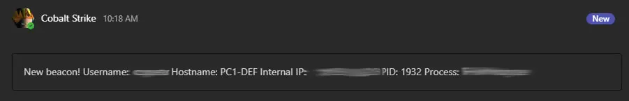

A dive into
Red Teaming Psychology
* * *
$ whoami
I am John Torakis
I currently work as a
/S(enio)?r.?\s+(Cloud\s+Security)|((Sec|Dev){1,2}Ops)\s+Engineer/i,have also worked as a
/(SOC\s+Analyst)|(Pen(etration)?\s+Tester)/i* * *
I am writing the blog securosophy.com since 2016,I've authored a small novel and...
I currently pursue my BSc in Psychology
And then you get this:
How do you feel now?
What about Other Jobs
Do other jobs like ...
... get such mood swings?
Maybe they are not that passionate with their jobs?
I believe it's something else...